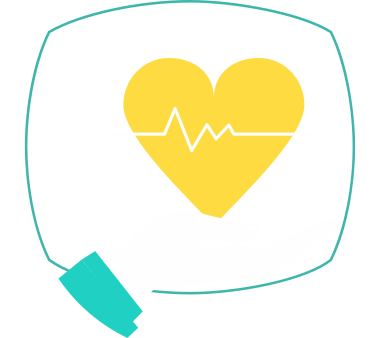

Professionnalisme

Mieux-être
Sens de l'engagment
Kinésithérapeute depuis 13 ans et forte de mon expérience humaine dans le milieu de la santé mentale, je souhaite mettre à profit mon empathie, ma formation universitaire et mon sens du travail bien fait, au service du bien-être de votre équipe. Instaurez une routine de bien-être dans votre entreprise et renforcer le sentiment d’appartenance tout en se donnant les atouts d’une meilleure rentabilité et productivité, voilà ce que je vous propose.